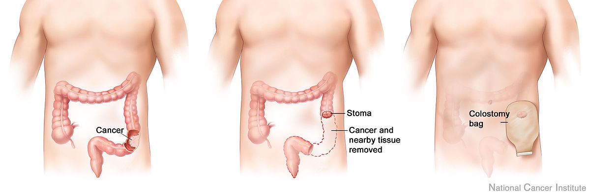

Bienvenue Sur Medical Education
Les stomies digestives
Definition
La stomie digestive est un abouchement chirurgical temporaire ou permanent a la paroi abdominale anterieure d'un segment de l'appareil digestif.
La stomatherapie est une maetrise des connaissances techniques et des principes de relations d'aides, qui vont permettre au stomise de retrouver son autonomie le plus vite possible.
Comme toutes personnes mutilees, le stomise est un etre souffrant dans son corps physique, psychique et spirituel.
La realisation d'une stomie a pour consequence :
La perte du contrele volontaire de l'exoneration des matieres fecales ou des urines.
L'alteration de l'image corporelle.
Il s'agit d'un soin infirmier sur rele propre : art. R.4311-5 decret 2004-802 du 29/07/2004.
Les differents stomies digestives
Colostomie
Le celon
Le rele du celon consiste surtout a reabsorber l'eau des selles et, accessoirement, a digerer quelques aliments fibreux. Apres leur passage dans l'intestin grele, les selles arrivant dans le celon sont liquides ; puis, au fur et a mesure de leur progression dans le cadre colique, elles s'epaississent.

La colostomie
La colostomie est l'abouchement chirurgical du celon a la paroi abdominale afin d'assurer de recueillir le transit intestinal.
La qualite des selles evacuees par la stomie est fonction du siege de celle-ci :
Colostomie transverse droite : selles semi-liquides voire peteuses.
Colostomie gauche : selles solides.
 |
|
 |
|
 |
| Colostomie transverse droite |
|
Colostomie transverse gauche |
|
Colostomie gauche |
Ileostomie
L'ileon
L'ileon est la partie terminale de l'intestin grele, il s'abouche dans le gros intestin.
L'ileostomie
L'ileostomie est l'abouchement chirurgical d'une anse ileale a la paroi abdominale afin d'assurer de recueillir le transit intestinal.
Selles liquides et abondantes : il n'y a pas de reabsorption de l'eau des selles dans la partie de l'ileon.
Gastrostomie
La gastrostomie est l'abouchement chirurgical de l'estomac a la peau, ce qui permet l'introduction d'une sonde entrant par le ventre et allant directement dans l'estomac pour effectuer une alimentation enterale.

Jejunostomie
La gastrostomie est l'abouchement chirurgical du jejunum a la peau, ce qui permet l'introduction d'une sonde entrant par le ventre et allant directement dans l'intestin, au niveau du jejunum pour effectuer une alimentation enterale.
Indications
Colostomie
Colostomie temporaire :
Protection d'une anastomose.
Occlusion.
Mise au repose d'une partie de l'intestin.
Pathologies infectieuses : peritonite due a la perforation du celon.
Pathologies inflammatoires du celon et du rectum.
Colostomie definitive :
Pathologies malignes : tumeurs.
Ileostomie
Ileostomie temporaire :
Protection d'une anastomose ileorectale ou ileoanale, attente de guerison.
Ileostomie definitive :
Rectocolite hemorragique.
Pathologies benignes : polypose adenomateuse, carcinomes multiples.
Traumatisme du celon et du rectum.
Les differents sites operatoires des stomies
Afin d'eviter les complications post-operatoires dues a une localisation de la stomie, il est recommande de reperer au prealable le meilleur endroit possible en fonction de l'intervention prevue par le chirurgien et selon certains criteres :
A distance des cicatrices deje existantes ou prevues.
A distance de l'ombilic.
A distance des reliefs osseux (epine, iliaque antero-superieure, pubis)
Dans la limite des muscles grands-droits de l'abdomen (ceux-ci se situent sur une ligne allant de la pointe des seins au pubis).
En dehors de tout pli cutane important.
De faeon a etre visible par le patient dans au moins une position (debout, assis, couche).
En tenant compte d'un eventuel handicap.
Afin d'eviter tout risque d'effaeage, une fois le reperage fait, injecter une goutte de bleu de methylene en intradermique.
Materiels
Systeme de recueil en poche :
Colostomie gauche :
Systeme 1 piece (socle + poche) : non sterile, transparent et equipe d'un filtre et systeme de prevention antigonflement de la poche.
- Colostomie droite :
- Systeme 2 pieces vidable :
- Socle avec systeme de verrouillage de securite click audible.
- Poche non sterile, transparente et equipee d'un filtre et systeme de prevention antigonflement de la poche.
- Ileostomie :
- Systeme 1 piece vidable (socle + poche), non sterile, transparent, avec vidange.
- Systeme 2 pieces vidable :
- Socle avec systeme de verrouillage de securite click audible.
- Poche non sterile, transparente, avec vidange.
- Ciseaux.
- Cuvette, eau tiede.
- Savon neutre.
- Gant de toilette.
- Compresses non steriles.
- Gants non steriles a usage unique.
- Protection pour le lit.
- Sac a elimination des dechets.
- Desinfectant de surface et chiffonnette.
Realisation du soin
Prevenir le patient.
Installer confortablement le patient en decubitus dorsal.
Mettre une protection sous le patient.
Effectuer un lavage simple des mains.
Mettre les gants non steriles.
Enlever la poche souille :
Maintenir la peau.
Enlever la poche, du haut vers le bas.
Quantifier les selles.
Nettoyer la stomie avec le gant de toilette, de l'eau et du savon : une stomie se nettoie de la meme faeon que l'on nettoie un anus lors de la toilette.
Rincer abondamment.
Secher le pourtour de la stomie par tamponnement avec des compresses non steriles seches.
Jeter les gants.
Mesurer le diametre de la stomie a l'aide des dessins du socle.
Decouper la partie adhesive du socle : ajouter 5 mm au diametre mesure.
Coller le socle en veillant a ne pas recouvrir une partie de la stomie.
Fixer la poche sur le socle.
Effectuer un lavage simple des mains.
Reinstaller le patient.
Ranger, jeter et desinfecter tout le materiel utilise.
Transmission : quantite des selles, aspect de la stomie, etat cutane au pourtour de la stomie, reaction du patient.
Risques et complications
Complications et incidents de la stomie
Ischemie, necrose : stomie cyanose, odeur nauseabonde : retour au bloc.
Desinsertion : stomie pas ou peu visible : retour au bloc.
Hemorragie : sang dans la poche, suintement : retour au bloc.
Evisceration : exteriorisation des anses du grele : champ sterile et serum physiologique.
Abces peritoneal : oedeme, ecoulement, douleur, fievre.
Fistule : berges et suture infectees : soins locaux.
Occlusion : arret du transit (gaz et selles) : avis chirurgical et anesthesique.
Peritonite : avis chirurgical et anesthesique.
Irritation cutanee : erytheme : soins locaux.
Consequences de l'ileostomie
Debit d'environ 1 L/ 24h : fuite hydrosodee, risque de lithiase renale par acidose hyperchloremique : faire boire beaucoup d'eau.
Ablation de la derniere anse ideale :
Carence en vitamine B12 : risque d'anemie de Biermer.
Carence en sels biliaires : risque de lithiase vesiculaire.
Augmentation de la concentration en enzymes pancreatiques : risque de problemes cutanes par proteolyse en cas de fuite.
Alteration de l'image corporelle
Phase de negation : le patient pense que ce n'est pas possible, pas a lui.
Phase de reprise de conscience de la perte de la fonction d'exoneration.
Phase de tristesse, voire de depression majeure.
Phase de recuperation donc phase de l'acceptation.
Surveillances et evaluations
Aspect de la stomie.
Efficacite de l'appareillage.
Etat cutane.
Transit : gaz, selles.
Voir aussi :
L'appareil digestif
Module Gastro-enterologie